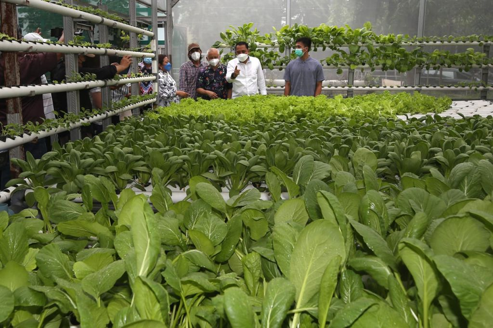
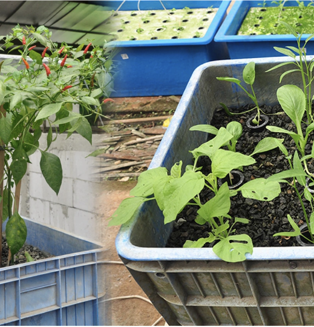
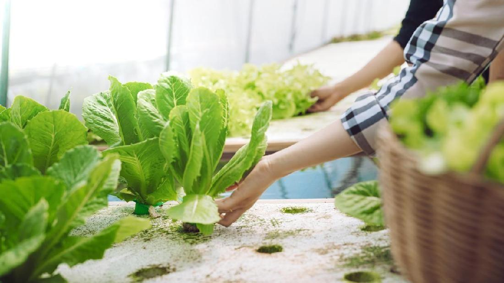
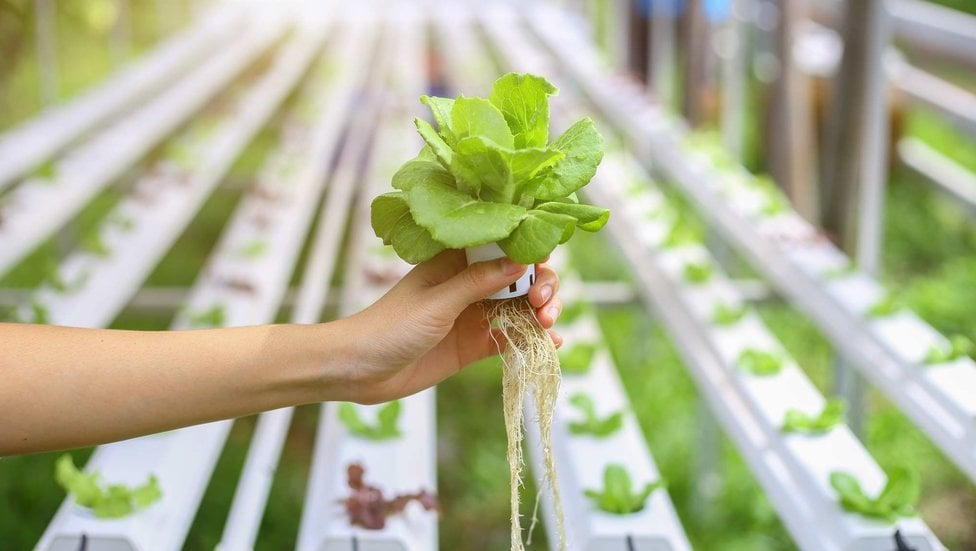
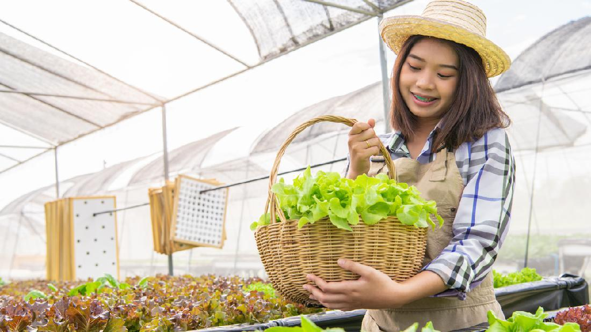

Kategori : Artikel Terbaru
6 Kesalahan Umum Pemula Hidroponik
Maret - 10 - 2023
Untuk tanaman hidroponik dapat bertumbuh dengan baik, perlu bekerja dengan rajin dan disiplin. Ada hal-hal yang harus diperhatikan tiap hari terhadap sistem hidroponiknya. Dibawah ini diuraikan 6 kesalahan umum yang sering dilakukan oleh pemula hidroponik. 1. Panen terlalu cepat Setiap...

Pengenalan sistem hidroponik food ....
Maret - 2 - 2023
Sistem hidroponik flood and ebb memanfaatkan prinsip pasang surut cairan nutrisi. Media tanam dalam sistem hidroponik flood and ebb bukan tanah melainkan media yang tidak mengandung pupuk/nutrisi seperti : kerikil serbuk kayu hidroton Pasir Perlite arang sekam jadi...

Hal Penting Agar Tanaman Hidropnik...
Maret - 2 - 2023
Tanaman hidroponik dapat tumbuh subur dan cepat, jika dirawat dengan baik. Dibawah ini ada 8 hal yang perlu diperhatikan agar tanaman sayur hidroponik dapat tumbuh cepat dan sehat : 1. Persemaian yang sehat. Jika semainya tidak sehat dan terkena penyakit ...

Lainnya :

Hal Penting Agar Tanaman Hidropnik...
Maret - 2 - 2023
Tanaman hidroponik dapat tumbuh subur dan cepat, jika dirawat dengan baik. Dibawah ini ada 8 hal yang perlu diperhatikan agar tanaman sayur hidroponik dapat tumbuh cepat dan sehat : 1. Persemaian yang sehat. Jika semainya tidak sehat dan terkena penyakit ...
Hal Penting Agar Tanaman Hidropnik...
Maret - 2 - 2023
Tanaman hidroponik dapat tumbuh subur dan cepat, jika dirawat dengan baik. Dibawah ini ada 8 hal yang perlu diperhatikan agar tanaman sayur hidroponik dapat tumbuh cepat dan sehat : 1. Persemaian yang sehat. Jika semainya tidak sehat dan terkena penyakit ...
